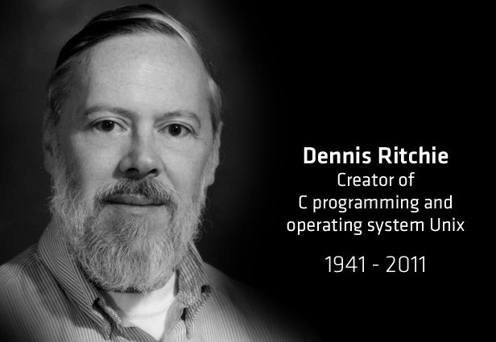
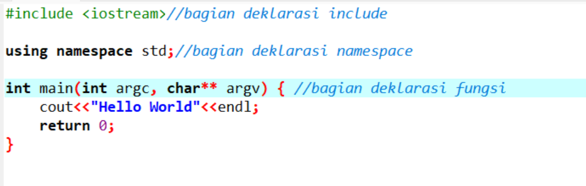

Adalah bahasa pemrograman tujuan umum yang sangat populer, sederhana, dan fleksibel untuk digunakan. Ini adalah bahasa pemrograman terstruktur yang independen mesin dan banyak digunakan untuk menulis berbagai aplikasi, sistem operasi seperti Windows, dan banyak program kompleks lainnya seperti Oracle Database, Git, Interpreter Python, dan banyak lagi.
Dikatakan bahwa ‘C’ adalah bahasa pemrograman Tuhan. Orang bisa mengatakan, C adalah basis untuk pemrograman. Jika Anda tahu ‘C,’ Anda dapat dengan mudah memahami pengetahuan tentang bahasa pemrograman lain yang menggunakan konsep ‘C’
Pangkalan atau ayah dari bahasa pemrograman adalah ‘Algol.’ Ini pertama kali diperkenalkan pada tahun 1960. ‘Algol’ digunakan secara besar-besaran di negara-negara Eropa. ‘Algol’ memperkenalkan konsep pemrograman terstruktur ke komunitas pengembang. Pada tahun 1967, bahasa pemrograman komputer baru diumumkan disebut sebagai ‘BCPL’ yang merupakan singkatan dari bahasa pemrograman gabungan dasar. BCPL dirancang dan dikembangkan oleh Martin Richards, terutama untuk perangkat lunak sistem penulisan. Ini adalah era bahasa pemrograman. Tepat setelah tiga tahun, pada tahun 1970 sebuah bahasa pemrograman baru yang disebut ‘B’ diperkenalkan oleh Ken Thompson yang berisi beberapa fitur ‘BCPL.’ Bahasa pemrograman ini dibuat menggunakan sistem operasi UNIX di AT & T dan Bell Laboratories. Kedua ‘BCPL’ dan ‘B’ adalah bahasa pemrograman sistem.

Pada tahun 1972, seorang ilmuwan komputer yang hebat Dennis Ritchie menciptakan bahasa pemrograman baru yang disebut ‘C’ di laboratorium Bell. Itu dibuat dari ‘algol’, bahasa pemrograman ‘BCPL’ dan ‘B’. Bahasa pemrograman ‘C’ berisi semua fitur bahasa-bahasa ini dan banyak lagi konsep tambahan yang membuatnya unik dari bahasa lain.
‘C’ adalah bahasa pemrograman yang kuat yang sangat terkait dengan sistem operasi UNIX. Bahkan sebagian besar sistem operasi UNIX dikodekan dalam ‘C’. Awalnya pemrograman ‘C’ terbatas pada sistem operasi Unix, tetapi ketika mulai menyebar di seluruh dunia, itu menjadi komersial, dan banyak kompiler dirilis untuk sistem lintas platform. Saat ini ‘C’ berjalan di bawah berbagai sistem operasi dan platform perangkat keras. Ketika mulai mengembangkan berbagai versi bahasa yang dibebaskan. Kadang-kadang menjadi sulit bagi pengembang untuk mengikuti versi terbaru karena sistem berjalan di bawah versi yang lebih lama. Untuk memastikan bahwa bahasa ‘C’ akan tetap standar, American National Standards Institute (ANSI) mendefinisikan standar komersial untuk bahasa ‘C’ pada tahun 1989. Kemudian, itu disetujui oleh International Standards Organization (ISO) pada tahun 1990. ‘C’ Programming Bahasa juga disebut sebagai ‘ANSI C’.
Bentuk atau struktur dasar program yang dibuat dengan C++ terdiri dari tiga bagian:
mari kita lihat contohnya:
Ini adalah struktur paling sederhana dari program C++.
Berikut ini penjelasan detail setiap bagian:
pada bagian ini, kita mendefinisikan library (pustaka) apa saja yang akan kita gunakan di dalam program.
Library bisa kita anggap sebagai program lain yang ingin kita gunakan di dalam program kita.
Pada contoh di atas, kita menggunakan pustaka iostream. Library ini berisi fungsi-fungsi untuk melakukan input dan output.
Kadang kita juga akan menemukan library yang di-include dengan ekstensi .h, .cpp, .hpp, .cc, .c, dsb.
Contoh:
Semua memiliki arti yang sama, yaitu: gunakan library yang lain ke dalam program ini.
Perbedaanya pada jenis file yang akan diimpor:
Lalu perbedaan yang lain tedapat pada simbol yang digunakan untuk include.
Jika menggunakan tanda kurung siku <...> maka program akan mencari library ke dalam sistem komputer kita.
Sedangkan yang menggunakan tanda petik, akan mencari ke lokasi yang ditentukan di sana.
Bagian ini sebenarnya bersifat opsional, bisa ditulis bisa tidak.
Pada contoh di atas, kita menggunakan namespace std. Karena fungsi-fungsi pada iostream dibungkus dalam namespace std.
Apabila kita tidak menggunakan namespace std, maka untuk menggunakan fungsi cin dan cout yang ada pada iostream harus diawali dengan std::.
Seperti ini:
Jika tidak ingin menulis std:: terus-menerus, maka gunakanlah namespace std.
Bagian ini adalah baigan terpenting, di sinilah kita akan banyak menulis kode program.
Pada contoh di atas, terdapat fungsi main.
Fungsi main() adalah fungsi yang akan dieksekusi pertamakali saat program dibuka.
Fungsi ini wajib ada di setiap program yang dibuat untuk dieksekusi.
Tapi…
Jika hanya membuat program yang berfungsi sebagai library saja, fungsi main() boleh tidak dibuat.
Selain fungsi main() kita juga bisa membuat fungsi yang lain pada bagian ini.
Contoh:
Pada contoh di atas kita membuat fungsi hell() di bawah fungsi main().
Apakah boleh ditulis di atas fungsi main()?
Boleh Saja.
Yang tidak boleh, menuliskannya di dalam fungsi main seperti ini: